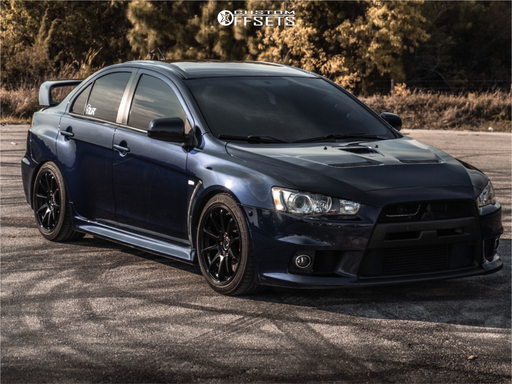

Mitsubichi lancer

Info
Se trata de un auto muy exitoso en todas sus versiones, durable, con una fiabilidad de enorme reputación, sea en cupé o sedán, familiar, 3 y 5 puertas, por sus magníficas mecánicas, sus características y cualidades en el mundo de Rallys, gozando de una gran popularidad y aceptación.
Videos cobre el auto